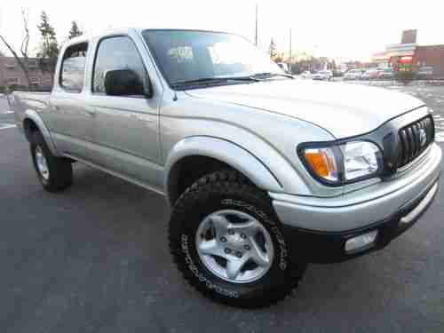

Toyota is a Japanese automotive company. Over the years the company has produced many different models of cars ranging from SUV's to trucks to sports cars to electric hybrid cars. In the earlier years of Toyota, they had produced a truck that seemed like it would never die. Even in the present day some may be able to see old 1980's trucks driving around on the road. Soon after the first initial release of their trucks came the Tacoma. Their first generation of the Tacoma was a very popular truck that became popular very fast.
Tabitha is my truck of course! She is a generation 1 Tacoma in its last production year, 2004. Tabitha, or Tabby for short, has a full cab, four wheel drive, six feet long bed, stock 16 inch wheels, and is automatic. Sure she doesn't sound like much, which she isn't right now, but she sure does get me from A to B. I have owned her for a complete 3 YEARS and during those years I have wanted to do so many upgrades that would make her run and drive better. But, like almost everything, somethings didn''t quite go to plan as many parts began failing.Parts such as ball joints, brakes, radiator, suspension/shocks, and the frame all gradually began to rust away causing Tabby to split from where the cab meets the bed.
Most of the common components that need regular updates have been fixed. Things like the frame, radiator, and suspension are still in the works of being put together. Ideally everthing will be finished by the summer of 2024 but as of right now here is how she looks: